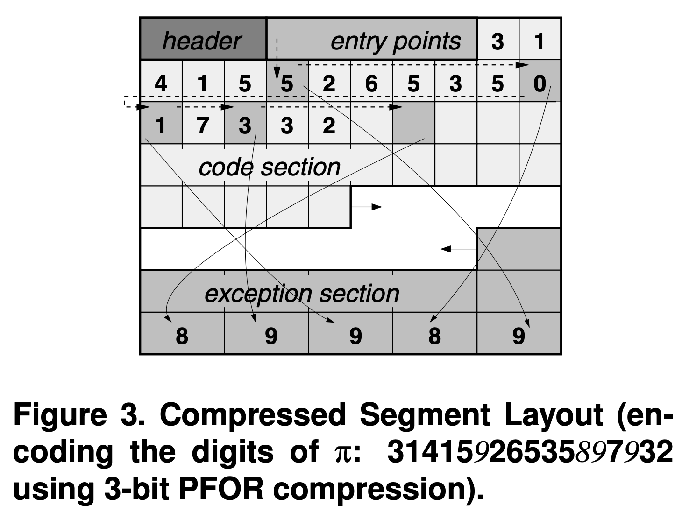

참고한 것들
Patched + 어쩌고
- FOR 이나 Delta 에서 보면 BP 로 싹 bit 수를 줄이고 싶은데 중간중간 튀는 놈들이 있어 BP 가 어려운 경우를 볼 수 있다.
- 근데 이런 튀는 값들 때문에 저런 encoding 을 사용하지 못하는 것이 너무 아쉬운 나머지, 얘네들에 대해서는 Exception 으로 따로 처리하는 방법이 Patching 이다.
- Patching 을 적용한 FOR 를 PFOR 라고 부르고,
- 이 Exception 을 사용하면서, 기존 FOR 에서는 최소값을 base 로 사용했지만 더이상 그럴 필요가 없어졌다.
- 즉, 만약에 base 보다 작은 값이 있다면 그 값을 Exception 으로 처리해버리면 되기 때문.
- Patching + FOR + Delta 모두 섞어서 PFORDelta 도 있다.
- Patching 을 적용한 FOR 를 PFOR 라고 부르고,
예시
- 가령 다음의 배열을 보자. (이 값들은 이진수이다.)
0 1 2 3 4 5 6 7 8 9 10 11
array: [10,10,1,10,100110,10,1,11,10,100000,10,110100]
- 딱 봐도 너무 아쉽다; index 4, 9, 11 만 아니면 BP 을 이용해 각 원소를 2bit 으로 표현할 수 있을텐데 말이야.
- 그래서 저런 딴따라들을 따로 저장하자는 생각을 한 것이다. 이렇게:
0 1 2 3 4 5 6 7 8 9 10 11
array: [10,10,1,10,{?},10,1,11,10,{?},10,{?}]
0 1 2
excep: [100110,100000,110100]
- 딴따라들을 별도의
excep으로 분리해 놓고 기존의 값들은 일단{?}로 처리해 놓았다. - 그럼 저
{?}에는 어떤 것을 적어야 이 값이 일반 value 가 아니라 Exception 라는 것을 나타낼 수 있을까? - PFOR 에서는 여기에 next exception offset 을 채워넣는다.
- 가령 index 4 의 exception 은, 다음 exception 이 index 9 에 있다는 것을 알리기 위해, 를 적는다.
- 마찬가지로 index 9 에는 다음 exception 이 index 11 에 있으므로 를 적는다.
- 즉, 이렇게 계산된다는 것.
- 이 값은 “두 exception 사이에 있는 일반 value 들의 개수” 로 생각할 수도 있다.
- 그럼 결국에 이렇게 바뀐다.
0 1 2 3 4 5 6 7 8 9 10 11
array: [10,10,1,10,100,10,1,11,10,1,10,0]
0 1 2
excep: [100110,100000,110100]
- 이러면 각 원소를 표현하는데 3bit 만 있으면 될 것이다.
- 근데 그럼 “첫 exception” 은 어느 index 에 있는지 어떻게 알까? 즉, 저 index 4 가 exception 이라는 것은 어떻게 알까?
- 이를 위해, 맨 앞에 Entry points 가 붙는다.
- 이 값은 “무조건” 32bit 이고, 두개의 값을 담고 있다.
- “첫 exception 의 위치” 와,
- “첫 exception 의
exceparray 에서의 위치”- 이게 왜 필요한지는 뒤 에서 설명해 주마.
- 이 값은 “무조건” 32bit 이고, 두개의 값을 담고 있다.
- 최종적으로 다음과 같이 바뀌게 된다.
entry: [4, 0]
0 1 2 3 4 5 6 7 8 9 10 11
array: [10,10,1,10,100,10,1,11,10,1,10,0]
0 1 2
excep: [100110,100000,110100]
Format

- 기본적으로는 위의 예시 에서 설명한 것과 일맥상통한다.
- 여기서 좀 더 구체적으로 알아보자.
- Segment:
- 전체 배열은 (논문에서는 최대 32MB 사이즈의) Segment 라는 단위로 나뉘어 encoding 된다.
- 이놈은 Page 라고 불리기도 한다.
- Header:
- Segment 의 시작점에는 Header 가 붙어있고, 여기에는 몇 bit 로 packing 되어 있는지, 각 section 들이 어느 위치에 있는지 등에 대한 정보가 들어 있다.
- Entry points:
- 위에서 말한 대로, 여기에는 (1) 첫 exception 의 Code section 에서의 위치와 (2) 첫 exception 의 Exception section 에서의 위치 값이 들어 있다.
- 근데 이건 Code section 전체가 아닌, 여기에서 128 개의 값 마다 Entry point 가 하나씩 생성된다.
- 이 “128 개의 값들의 묶음” 을 Block 이라고도 부르는데, 이건 exception offset 이 너무 커지지 않게 하기 위함이다.
- 즉, 128 개씩 묶여있기 때문에 exception offset 값이 128 보다 커지지는 않는 것.
- 따라서 이런 여러 Block 들이 하나의 Exception section 을 공유하고 있기 때문에, 한 Entry point 에는 첫 exception 의 offset 뿐 아니라 Exception section 에서의 위치도 저장해야 되는 것이다.
- Code section:
- Packing 된 값들이 있는 곳이다. 위 그림에서 볼 수 있듯이, exception 들은 offset 값으로 연결되어 있다.
- 이 부분은 (그림에서도 보이다시피) 앞에서 부터 자라며, Segment 의 거의 대부분을 차지한다.
- Exception section:
- Exception 들이 있는 곳이며, 여기에 있는 애들은 Packing 되지 않고 원본 그대로 있는다.
- 얘는 마치 메모리에서 stack 과 heap 마냥 Code section 과 반대 방향으로 자란다.